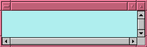

The most basic widget is the NeoMap. The other widgets are made up of NeoMaps specialized for a particular problem. Let's build as short a program as we can with a NeoMap. We will use the Swing toolkit for basic GUI functionality -- although GenoViz widgets can also work with other Java GUI toolkits such as AWT or SWT, Swing is the most common in use today.
package genoviz.tutorial;
import com.affymetrix.genoviz.widget.NeoMap;
import javax.swing.JFrame;
public class Hello {
public static void main (String argv[]) {
NeoMap map = new NeoMap();
JFrame frm = new JFrame( "Hello" );
frm.getContentPane().add("Center", map);
frm.setBounds(20, 40, 300, 100);
frm.setVisible(true);
}
}
When you run this program you should see something like what you see below. The map is empty, but the nice pale blue color lets us know that it is there. Pale blue is the default background color for a NeoMap.
